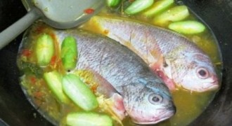
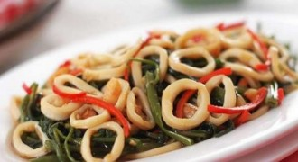
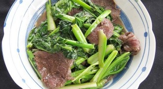

3 Resep Makanan Sederhana
Resep dan Cara Membuat Ikan Ekor Kuning Acar Yang Lezat dan Gurih

in ekor ikan acar kuning by Kris Santi Handayani
Saatnya anda membuat varian masakan dari bahan dasar ikan ekor kuning dengan disulap menjadi masakan acar yang lezat dan gurih. Ikan merupakan sajian hidangan yang paling banyak disukai oleh banyak para pecinta kuliner. Karena ikan memiliki dagingnya yang…
Resep dan Cara Membuat Cah/Tumis Kangkung Cumi yang Enak dan Spesial Ala Resto

in Aneka Resep Sayur dan Tumis Kangkung by Kris Santi Handayani
Ingin mendapatkan menu makan yang spesial ala resto? Maka anda bisa mencoba resep cah/tumis kangkung cumi. Tumis kangkung cumi ini dipercaya memilik cita rasa yang sangat enak dan tidak jauh berbeda seperti halnya tumis kangkung yang dijual di restoran. Anda…
Resep Masak dan Cara Membuat Tumis Kailan Cah Daging Sapi yang Lezat dan Spesial

in Aneka Resep Tumis dan Sayur Kailan by Kris Santi Handayani
umis kailan cah daging sapi merupakan hidangan spesial yang bisa anda buat sebagai menu makan di rumah. Tumisan yang lezat nan sehat ini akan membuat makan anda bersama keluarga terasa lebih istimewa. Cita rasanya yang sudah tidak diragukan lagi akan membuat…